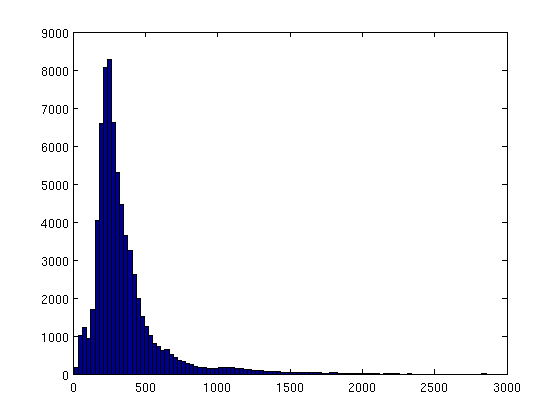
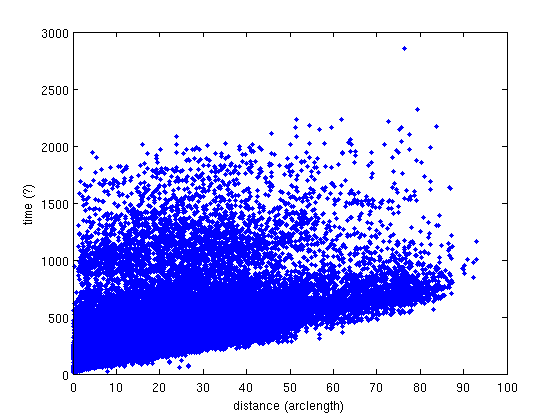
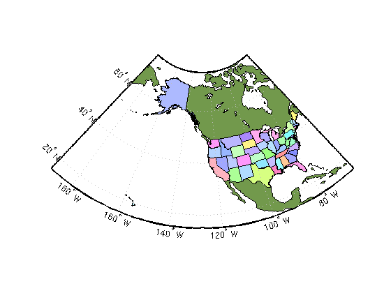
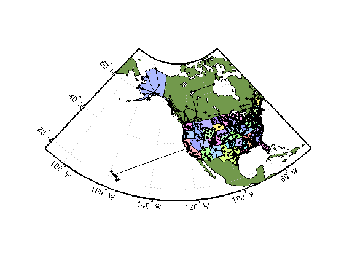
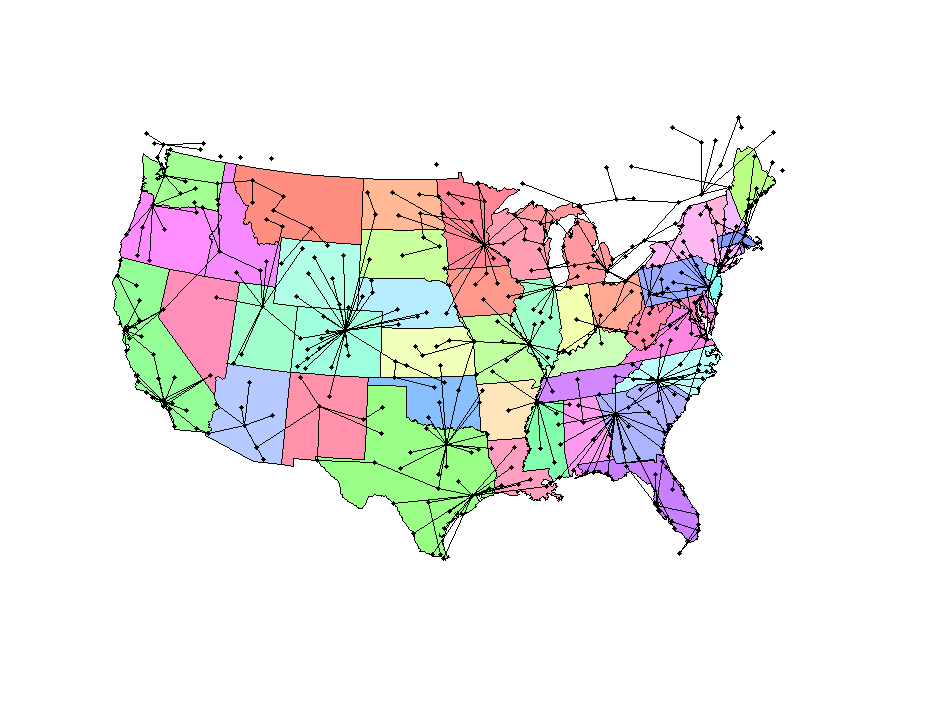

The US airport network
THe North American airport network is an interesting graph to examine. The source for this data was a file on Brendan Frey's affinity propagation website. A(i,j) is the negative travel time between two airports. Although the data didn't include the airport locations, I used the Yahoo! Geocoding API to generate a latitude and longitude for each airport.
Contents
The data
load_gaimc_graph('airports');
Plot a histogram for all route time estimates
[si, ti, rt] = find(A);
hist(-rt,100); % times are stored as negative values
 Find the lengthiest route
[val,ind] = max(-rt)
{labels{si(ind)} labels{ti(ind)}}
val =
2855
ind =
63478
ans =
'Honolulu, HI' 'St. Johns, NL'
Some of the routes include stop overs, so it's probable that is what we find in this case.
Graph analysis: connected?
One of the first questions about any graph should be if it's connected or not.
max(scomponents(A))
ans =
1
There is only one connected component, so the graph is connected.
Distance instead of time
Let's see how the edges correlate distance with estimated travel time.
[ai aj te] = find(A); de = distance(xy(ai,:), xy(aj,:)); plot(de,-te,'.'); xlabel('distance (arclength)'); ylabel('time (?)');
Wow! It's all over the place, but there is a lower bound. Some of these routes can include stop
Minimum spanning tree
This section repeats and extends some analysis in the overall gaimc demo. First, let's recompute the minimum spanning tree based on travel time.
load_gaimc_graph('airports') A = -A; % we store the negative travel time A = max(A,A'); % travel time isn't symmetric T = mst_prim(A); clf; gplot(T,xy); % These next lines plot a map of the US with states colored. ax = worldmap('USA'); load coast geoshow(ax, lat, long,... 'DisplayType', 'polygon', 'FaceColor', [.45 .60 .30]) states = shaperead('usastatelo', 'UseGeoCoords', true); faceColors = makesymbolspec('Polygon',... {'INDEX', [1 numel(states)], 'FaceColor', polcmap(numel(states))}); geoshow(ax, states, 'DisplayType', 'polygon', 'SymbolSpec', faceColors) set(gcf,'Position', [ 52 234 929 702]);
That's the US, now we need to plot our data on top of it.
[X,Y] = gplot(T,xy); % get the information to reproduce a gplot plotm(Y,X,'k.-','LineWidth',1.5); % plot the lines on the map
Let's just look at the continential US too.
clf; ax = usamap('conus'); states = shaperead('usastatelo', 'UseGeoCoords', true, 'Selector',... {@(name) ~any(strcmp(name,{'Alaska','Hawaii'})), 'Name'}); faceColors = makesymbolspec('Polygon',... {'INDEX', [1 numel(states)], 'FaceColor', polcmap(numel(states))}); geoshow(ax, states, 'DisplayType', 'polygon', 'SymbolSpec', faceColors) framem off; gridm off; mlabel off; plabel off set(gcf,'Position', [ 52 234 929 702]); plotm(Y,X,'k.-','LineWidth',1.5); % plot the lines on the map
One interesting aspect of this map is that major airline hubs (Chicago, New York, etc. are not well represented. One possible explaination is that they have larger delays than other regional airports.
Honolulu to St. Johns?
Before, we saw that the lengthiest route was between St. John's and Honolulu. But, does the network have a better path to follow between these cities? Let's check using Dijkstra's shortest path algorithm!
% Reload the network to restore it. load_gaimc_graph('airports') A = -A; % find the longest route again [si, ti, rt] = find(A); [val,ind] = max(rt); % we've already negated above, so no need to redo it start = si(ind); dest = ti(ind); [d pred] = dijkstra(A,start); % compute the distance to everywhere from St. Johns d(dest)
ans = 735
That value is considerably shorter than the direct time. How do we find this awesome route?
path =[]; u = dest; while (u ~= start) path=[u path]; u=pred(u); end fprintf('%s',labels{start}); for i=path; fprintf(' --> %s', labels{i}); end, fprintf('\n');
Honolulu, HI --> Chicago, IL --> Montreal, QC --> St. Johns, NL
All pairs shortest paths
At this point, the right thing to do would be to recompute each edge in the network using an all-pairs shortest path algorithm, and then look at how distance correlates with time in that network. However, I haven't had time to implement that algorithm yet.
Conclusion
Hopefully, you will agree that network algorithms are a powerful way to look at the relationships between airports!